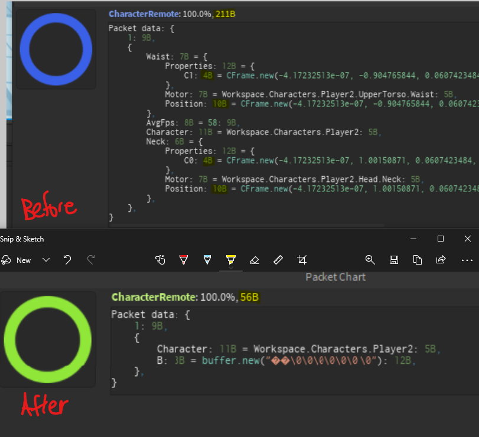

2.2.x¶
-
Potentially fix a crashing bug relating to when Npcs are streamed in because of StreamingEnabled. [#779]
2.2.5.2
-
Added checks to ensure lazy loaded to be loaded before attempt to use them.
- Added checks to ensure models are loaded on client before continue equipping. [#480]
- Fixed drop item glow showing up for in The Beginning cutscene.
-
Fixed RichText not enabled on quantity option menu. [#922]
2.2.5.1
-
Fixed opening cutscene camera. [#896]
- Fixed disguise kit not showing the uncapped amount of kills when it is capped in code. [#895]
- Fixed opening cutscenes for worlds Sunken Ship and Genesis.
- Fixed skin shop preview not applying skin. [#913]
- Fixed skins not loading on
portableautoturret. [#908] - Fixed skin permanent Polaris couldn't be applied. [#914]
- Adjusted normal survival drop order and drop starts from wave 5 onwards and drops every 3 waves. [#910]
-
Belly of the Beast now removes Sunken Salvages board mission if it's already complete to be added agin.
2.2.4.4
-
Added
militaryglovesandmilitaryglovesfingerlessunlockable. - Hotbar now refresh when toggled visibility. [#905]
-
Fixed Zombie body despawning instantly on kill.
2.2.4.3
-
Added rain puddles.
-
QoL: Improved interact key handling with proper handling priority.
- Interacting with interactables always has the highest priority, 0.
- Interacting with items in inventories has priority index of 3.
- Interact to close windows (if opened) such as
engineersplanner,gps, etc.. has priority index of 5. - Interact to open equipped tool windows such as
engineersplanner,keytar, maps, has priority index of 10. - If any windows is opened and interact was not handled, least prioritized will close all closable windows.
2.2.4.2
-
Removed client ui loading delay due to loading player's avatar image for trade interface.
- Added backblast particles for
at4. -
Added
grandgarandidle animation. [#886]2.2.4.1
-
Fixed special event scripts not loading in certain worlds.
-
Fixed dying in first person bugs camera. [#881]
2.2.4.0
-
Fixed player visibility not updating when camera change. [#859]
- Fixed typo to disable Santa hat spawning on Witherers. [#784]
- Mission Belly of the Beast now ignores other items in the crate to progress. [#869]
- Added
/mission77 tpcratestometo tp Eaten Sunken Crate to player to make testing more efficient.
- Added
- Use new EventService to improve handling for events when exiting boss rooms after defeating a boss for a mission. [#872]
- Removed tax on
m9legacy. [#876] - Added sell price for
sandwichandziphoningserum. [#877] - Added sell price for
grandgarandparts[#877] - Fixed case
snowsledgetrying to load when character isn't loaded yet. [#824] ammopouchcharges are now universal instead of per ammo pouch. [#846]- Fixed ammo desync when hovering over a weapon in inventory. [#864]
- Fixed being able to acquire multiple Frostivus skin on the same weapon. [#848]
- Fixed
skullburstmodbreaks weapons when unequipping. [#866] - Fixed
frenzydamagemodbreaks weapons when unequipping. [#857] - Fixed
grandgarandbullet part missing customization layer and magazine base color. [#842] - Fixed
grandgarandmodel collision. [#861] - Fixed Engineer's Planner not working after dying. [#871]
- Character leaning now only occurs if you are focused.
- Fixed mismatch for notify message for gumball effect to state 2 minutes instead of 60 seconds.
- Fixed Joint motion step jitters when enabled. [#854]
- Fixed Victory popup not showing up if you close mission menu after winning a round of Buried Presents. [#850]
- Fixed unconfigurated TextChatService on TheUnderground. [#853]
- Fixed
/reloadcharnot reloading some aspects properly. [#851] - QoL: When Chat UI is resetted, commands history and unentered text is saved. E.g. Dying while typing.
- Fixed client commands not processing. [#852]
-
Fixed Event Pass complete notification when leveling up after completing event pass. [#849]
2.2.3.0
-
Disabled Oily in normal survival.
- Fixed P250 collision. [#843]
-
Fixed event pass not leveling up. [#840]
2.2.2.0
-
Fixed status not ready issue appearantly occuring for the second players onward joining the server.
- Fixed menu response in main menu. [#835]
- Fixed leveling up Frostivus after completing the event pass not awarding the badge. [#836]
-
Fixed Gingerbread applies Antique instead of Gingerbread. [#838]
arelshiftcrossgingerbreadcan be claimed again.2.2.1.0
-
Hid shop sell for gift tokens option since there is no gift shop this event. [#829]
- Fixed skin item name. [#832]
- Fixed applying skins stating unavailable. [#830]
- Adjusted client scripts loading to fix script loading issues caused by character resetting. [#772]
- Fixed faces on the P250 lock part. [#825]
-
Fixed missing Blue Snowflake unlockable for Xmas Sweater. [#823]
2.2.0.3
-
Increased Zombie movespeed cap from 30 to 35.
- Capped Dr. Sinister max health to 100k.
- Fixed missing use option. [#818]
- Adjusted Winter Treelum spawn position. [#819]
- Adjust code for BulletRicochet that may be causing ammo desync [#821]
- Reduced Winter Treelum summon interaction time to 2s. [#820]
- Added Frostivus 2024 Completion Badge for reaching event pass level 100+. [#822]
- Fixed buried presents loading multiple times. [#811]
- Fixed Frostivus event systems not working if Mr Klaws is not in the world. [#816]
- Updated outdated gift description. [#814]
- Fixed explosions. [#813]
- Fixed tools interaction menus. E.g. Map, Engineer's Planner, etc.. [#810] [#812]
-
Updated mission Monorails objective to reach wave 5 for completeion. [#809]
2.2.0.2
-
Fixed survival next wave reward icon. [#809]
- Fixed Sunken Slavages instantly respawning after interacting. [#750]
- Fixed polish progression bar. [#742]
- Adjusted leap tracjectory detection. [#764]
- Added check before continuing spawning bandits in Medical Breakthrout. [#782]
- All droptable level requirement are now capped at 300.
- Reduced all extreme boss level requirements to scale by 50. [#795]
- Fixed
grenadelauncherorientation on PaT. [#525] - Fixed
chainsawnot playing attack animation. [#696] - Fixed Zomborg Prime stunning from explosive barrels. [#754]
- Added some audio preload calls to improve experience. [#748]
- Improved damage tick for corrosive puddles. [#648]
- Fixed Tombs continuing after status changed from in progress. [#783]
- Fixed boombox. [#653]
- Fixed Whos that Survivor. [#752] [#753]
- Mastermind no longer consumes gifts if the slot is correct.
- Fixed Mastermind loading. [#807]
- Updated
ammopouchdescription. A pouch to contain extra ammo refill for your weapons. Refill charges can be restored in the shop. - Added
grandgarandbpto all corrupted survival drop table for wave 15. - Increased
deaglebpprice from $320 to $9300. - Fixed a case breaking Winter Treelum. [#806]
- Witherer are now capped to 100k health. Withering Effect status hud now shows you the build up before you start taking armor damage.
- Improved Witherer status readibility. [#789]
- Added mini boss Oily for new survival objective, Oily.
- Oily is fully immune but is flammable from fire damage. Once ignited, it is no longer immnue.
- Oily drips flammable oil every second.
- Explosions can now ignite flammables.
ammocratenow starts with 3 charges for refill.- Improved ricochet bullet tracer visibility.
- Improved
grandgarandscoped firing experience. No longer unscopes when firing, adjusted zoom. - QoL change, pressing interact key when over an item no longer activates the first context option (right click list). Only items with Equip or Usables will be hot interactable.
-
Added functionality to
ammopouch. Ammo pouch now has 3 refill charges which you can use anywhere to refill your weapon ammo. Pouch charges can be refilled in a shop.2.1.26.11
-
Fixed Sunken Ship cutscene stuck loading. [#774]
chainsawpart BladeB now uses BladeA's customizations. [#759]- Fixed
Winter Treelumnot spawning. [#777] - Reduced
xmas2019cost to 300 coal. [#800] - Fixed
ladder. [#803] [#687] - Fixed Bullet Ricochet updating ammo. [#790]
- Fixed Bullet Ricochet not triggering on PaT [#793]
- Reduced ricochet sound by half. [#789]
- Reduced
grandgarandbase damage by 20%, increased BulletRicochetCount to 2. - Fixed
grandgarandPaT mount orientation. [#792] -
Fixed Slaughterfest board missions adding back even when event is disabled. [#797]
2.1.26.10
-
Added level badge for mastery level 600+.
- Added
grandgarandbp. - Added MoveSpeed limit at 30 for basic zombies types.
- Added new part visiblity flag for first person mode while sliding. Legs, leg clothing, shoes and
snowsledgeare now visible while sliding. - Fixed slide jumping.
- Added clothing, head wear
knightshelmetand foot wear,greavesandsabatons. Unobtainable. - Fixed BulletRicochet bullet tracer when no enemies near by.
- Added Garand ping sound for
grandgarand. - Added
BulletRicochetmechanics forgrandgarand. Allows shots to ricochet to nearby enemies. - Added second minigame, Buried Presents, to Frostivus 2024 event menu.
- Basically minesweeper but you have to find the items and it cost gifts to uncover tiles.
- Added item unlockable,
snowsledgexmasgreen.
2.1.26.9
- Fixed abnormal character waist rotations in first person. Visible in freecam mode.
- Added new Vehicle Wear,
snowsledge. A new type of wearable utility. A home-made wooden sledge. [Passive] Sledding: Start sledding when you slide, allows you to slide for 2 extra seconds before you experience friction. WitherersandVein Of Nekronno longer able to wearsantahat. [#784]masusplushis now obtainable. Spawn vent locations varies depending on the day of the week and the world index. (Monday = TheWarehouse = 1, Tuesday = TheUnderground = 2, ...)/droptablewill now list all droptable id if no arguments were inputted.Wraithno longer able to wearsantahat. [#784]- Added mastermind gift minigame to event card.
-
Added
frostivus2024event card to mission menu.2.1.26.8
-
Added item skin,
p250toygun. - Updated
p250model to support uv mapping. - Added item skin,
portableautoturretcryogenics. - Added item skins,
tacticalbowneondeath. - Dual weapons are now equippable on the
portableautoturret, however, only one of the two guns will be attached. - On mission 2,
Where Am I. Mission point 6, will now set players gun ammo to 0. This is for a common case where players who didnt shoot a single round in the beginning not showing a refill option in shop, causing confusion. - Added item skins,
arelshiftcrossgingerbread,grandgarandornaments. - Added master mind minigame.
/mastermind. See/mastermind rules. - Entering commands are now no longer using TextChatService due to moderation complications. Sending a message that begins with
/will automatically change input boxs font and color to Code & yellow.- You can now chain commands together with a
;/syntax. e.g./game;/engine;/spawnentity Zombie
- You can now chain commands together with a
- Optimization, weapons handler no longer forces storage interfaces to update every second.
- Optimization, storage interfaces such as the Inventory no longer refreshes if it is closed.
- Added
grandgarandBulletRicochet base modifier. Description updated, The good ol' battle tested semi-automatic m1 garand but has a built-in Ricochet Rifling that allow shots to ricochet to nearby enemies. - Added
rechamber1216KnockoutTrigger base modifier. Description updated, Military grade mag based shotgun with built-in Knockout Trigger that knocks out enemies on close up headshots. -
uziis nowdualuzi.2.1.26.7
-
Reduced despawn time for basic enemy drops from 60 to 30 seconds.
- Opening crates now has a chance to drop frostivus gifts.
- Added frostivus gifts resources. These resources
bluegift,redgift,yellowgiftandgreengift, are unopenable and is for Mr. Klaws. - Added extra corrupted mode map details and filter to Sector F.
- Survivals are now endless by default. Hard mode is now called the Corrupted mode. In corrupted mode, enemies levels doubles every 2 waves.
-
In corrupted mode, drops are tied to waves. The hud now shows when and what's the next drop.
2.1.26.6
-
ninjashroud's passiveNinjaFleetnow reduces your base movement speed, but increases your sprint speed. Taking damage disable sprint for longer. Dashing will now breifly enable sprint for sliding. Dash charges and recharge will be added.- Stats are now shown in workbench.
warmongerscalesmodhealth decay will now start decaying after 20 instead of 10 seconds.warmongerscalesmodhealth decay no longer counts as taking damage. [#761]- Added new config
DisableHurtFlinch. Enabled in Nekron's Gambit. - Enabled
workspace.PathfindingUseImprovedSearch, new pathfinding alogrithm. - Reintegrated cross-server chat and faction chat for new chat system.
-
Migrated old chat backend to new TextChatService to avoid fail auto-migration restrictions.
- Cross-server chat are temporaily disabled and still in the works of migration.
- A potential loss of features until further implementation.
2.1.26.5
-
Added new mod,
Frenzy Damage Mod. Adds Damage based on Premod Damage. Additional Damage is built up when you take damage. Stack Rate: 1% per Damage Taken, Decay Delay: 10s2.1.26.4
-
Improved weapon status hud for displaying modifier effects. e.g.
skullburstmod. - Added new tier 5 smg,
uzi. - Added new tier 5 shotgun,
rechamber1216. -
Updated Npc Weapons Customizations to support new customization system.
- Bandits wielding an
ak47no longer has a stock. - Michael's
ak47redesigned. - Patrick's
ak47redesigned. - Safehome Npcs wielding weapons now has customizations applied.
2.1.26.3
- Bandits wielding an
-
Updated
ammopouchmodel. Old model is nowammopouchlegacyfor anyone owning the item.2.1.26.2
-
Restructured Revive Engine's item modifier modules in order to expose functionality to support custom weapon and clothing mods for Nekron's Gambit.
- Added skin,
nekrostrenchblaze. - Fixed
nekrostrenchtexture issues.2.1.26.1
2.1.26.0
- Added new achievement,
slaughterfest2024. Unlocked by cooking candies from the cauldron, you have 3 different recipes to choose from. You can level up this badge by cooking multiple times.- Added Slaughterfest 2024 leaderboard to shop.
- Moved Warehouse Safehouse Slaughterfest Cauldron to Sundays in order to make sure new players experience the main game first.
- Removed Slaugherfest quick join from main menu. It misdirected new players to the event game mode, leading to player loss.
- Fixed
megaswitchbladeunintended holster. [#741] - Tokens exchange no longer accessible when there's no event pass active. [#737]
- Fixed mission boards miscounting event missions, preventing new board missions to be added. [#734]
- Fixed Warmonger Scales applying effects in Slaughterfest [#738]
-
Fixed Slaughterfest score not resetting when joining the game. [#739]
2.1.25.3
-
Fixed ItemCodex data not loading properly. If your item codex presist to not load, please use
/fixitemcodexin a most up to date server.2.1.25.2
-
Added missing mission title on
Whos that Survivordialogues. - Fixed
Candy Devourer, not detectingzombiejellobeing eaten.2.1.25.1
2.1.25.0
- Eatible Halloween candies now spawn in Slaughterfest as a proxy (Doesn't add to inventory) for consuming only.
- Added event board mission,
Candy Devourer. Complete a Slaughterfest round after eating different candies. - Added setting for locking slide direction to camera direction. (Gameplay > General > Slide Camera Lock)
-
Added item tooltip for Slaughterfest Cauldron menu.
2.1.24.16
-
Added new board mission,
Whos that Survivor. Figure out which survivor to talk to and it'll give you relavent dialogues based on the past core and side missions. - Special Event Board missions are now added separately from normal board missions. You will get all special event board missions to choose to complete and automatically readded an hour after completion.
-
Added Board Mission,
Jack of all Slaughter. Complete a Slaughterfest round with different weapon kills.2.1.24.15
-
Added Unlockable,
aproncarnage. - You can no longer air jump or dash during wounded state. [#733]
-
Added Unlockables,
tierarmorhauntedandnvghauntedtoslaughterfestcandyrecipes24.2.1.24.14
-
Fixed missing appearance descriptor types e.g. Hair, Beard. [#734]
- Portable Auto Turret no longer detects enemies in Slaughterfest and Wraiths in general. [#734]
- Fixed round restarting twice. [#734]
- Fixed killer check to make sure it cannot be same as the dying player. [#734]
- Fixed Candy Hoarder to check only if the mission is active. [#734]
-
Fixed NPCs with missing appearance descriptors for hints. [#734]
2.1.24.13
-
Fixed WeaponInterface not removing when respawning. [#734]
- Fixed Candy Hoarder requiring a kill in Slaughterfest. [#734]
- Added mission,
Mass Slaughterer. Complete a Slaughterfest round and get 10 kills. - Readded Slaughterfest first place highlight.
- Slaughterfest World now has
Ninja Fleetenabled by default. - Slaughterfest Cauldron Menu now contains:
- Trick, where you exchange candies with NPCs. Whether the deal is good, is up to you to figure out.
- Cook, where you can cook new or old slaughterfest rewards.
- Treat, where you have to figure out the daily NPCs giving out treats.
- Slaughterfest now drops
slaughterfestcandybag, 3 for 1st, 2 for 2nd, 1 for 3rd placement with at least 1 kill. -
Replaced mission
Slaughter KingwithCandy Hoarder. Complete Slaughterfest round with at least 500 candies.2.1.24.12
-
Clarified
ninjacloakpassive description for climbing wall ledges. - Removed
jackolanternhauntedfromslaughterfestcauldron. Slaughterfest Cauldron is now just for old halloween items from previous events. New event items will be inslaughterfestcandyrecipes24directly craftable without needing to be rerolled or locked behind time lock. - Renamed
slaughterfestcandyrecipes24toslaughterfestcauldron. - Added dashing ability to
ninjashroudpassiveNinja Fleetrenamed fromNinja Focus.Ninja FleetSprint button is now a dash button. You automatically sprint when you haven't taken damage to your health for 2s. Dashing charges your character in one direction at high speed. Jumping during a dash performs a dash jump.
- Fixed sliding distance being affected by client framerates.
- You can now strafe slide.
- Added wall climbing and air jumping ability to
ninjacloakpassiveNinja Agility. -
Fixed bug not properly syncing passive effect statuses to client when spawning for the first time. Effects such as from
nvg.2.1.24.11
-
Updated
brownleatherboots. No longer gives 10% movement immpairment reduction. Now has passive,Bull Leaping, Slide jumping adds 10 units/sec launch speed. - Updated
brownleatherbootsmodel with new details and uv support. You can still use old model as Classic in appearance. - Added Item Unlockable,
brownleatherbootsblack. - Updated item passives with a passive named.
fireaxepassive is now calledAxe of Fire.sledgehammerpassive is now calledSpinning Destruction.cultisthoodpassive is now calledHoods Pact.nvgpassive is now calledNights Light.labcoatpassive is now calledLab Safety.nekrostrenchpassive is now calledNekrosis Heal.tirearmorpassive is now calledTiring Attacks.apronpassive is now calledSplash Reflect.brownleatherbootspassive is now calledBull Leaping.militarybootspassive is now calledFirm Footing.divingfinspassive is now calledDolphin Stride.
-
Added Chest and Head clothing,
ninjacloakandninjashroud.- Chest clothing,
ninjacloakhas passiveNinja Agility. - Head clothing,
ninjashroudhas passiveNinja Fleet.2.1.24.10
- Chest clothing,
-
Adjusted slide turn sensivity for mobile. [#728]
- Removed secret entrances to Vindictive Treasure. [#729]
- Slaughterfest Cauldron now shows available suvivors candy exchange. Exchange candies with survivors in order to get the candies you need.
- The exchange refreshes everyday with different survivors and exchange amounts.
- Earning at least 300 candies in a Slaughterfest round now rewards you a candy bag at the end of the round instead of winning first.
- Mission
Slaughter Kingnow dropsslaughterfestcandybag. - Added
jackolanternhaunted. A purple haunted variant ofjackolantern. - Slaughterfest Cauldron is now used to cook candies into a special rewards based on the
slaughterfestcandyrecipes24drop table.- Special rewards currently are items and skins from previous slaughter fest and a few new slaughter fest items.
- Obtain candies from
slaughterfestcandybagor other TBD drop sources.
- Added
slaughterfestcandybag. Drops up to 6 candies.- Added Slaughterfest candies that are used in the cauldron to create special rewards.
- Added
zombiejello,eyeballgummies,spookmallow,cherrybloodbar,wickedtaffy. Eatible abilties to be determined.
-
Added,
rideofthemothena. Adorable little critter. Now quite huggable, marketable and including some sort of deity! Description from Leroy8888.2.1.24.9
-
Slaughter Kingnow only requires you to reach top 3 with at least a kill.2.1.24.8
-
Initial sliding now respect your character's facing direction.
- Fixed interactables in, Quarantine Assessment 1, cutscene not spawning. [#720]
- Fixed Halloween Skin Pack from Halloween Basement not able to be pick up. [#718]
- Fixed cutscene for, Quarantine Assesment 2, not loading [#709]
-
New board mission, Slaughter King. Get first place in Slaughterfest with at least a kill.
2.1.24.7
-
Updated Slaughterfest. It's now just a casual pvp mode. (A new event gamemode is being worked on)
- At the end of the round, the top 3 will be displayed.
- Each round is now 8 minutes, the top 3 players with the most candies win.
- Increased weapon spawns.
- Kills candy drop increasesd from 20% to 40%. (+10% candy drop per kill if you are wearing halloween clothing)
- Over time, some of your candies become secure and can no longer drop below a threshold.
- Minigun damage dropoff reduced significantly.
- Added quick join to slaughterfest on main menu.
2.1.24.6
-
Fixed Mission Body 2 not loading due to missing asset. [#712]
-
Fixed End of the Line bugging out due to loading lock up due to halloween missions. [#713]
2.1.24.5
-
Added a live feed hud for pvp.
2.1.24.4
-
Adjusted Vein of Nekron code to attempt to fix crashing issue. [#673]
- Each vein now has a unified health instead of individual segment with 5k health.
2.1.24.3
- Each vein now has a unified health instead of individual segment with 5k health.
-
Fixed skins not loading if no other customizations are set. [#651]
2.1.24.2
-
Fixed missing dialogues for mission
Joseph's Crossbow. [#704] - Fixed melee interface loading issue. [#703]
2.1.24.1
2.1.24
- Sliding in third person now locks body to camera direction.
- Adjusted crouch toggle functionality for mobile to be semi toggle for a better sliding experience.
- Sliding now requires holding down crouch, releasing crouch does a slide cancel. Moving left or right during sliding now does a slide turn.
- Fixed mission
Infectedmissing dialogue. [#701] -
Fixed varies pvp related bugs.
2.1.23.4
-
Improved guidance for mission 2 and 5 for onboarding.
2.1.23.3
-
Fixed not detecting ground on mobile hence allowing Rocketman to be active at all times. [#688]
- Fixed
fireaxe, bug when unequipping due to error loading unequip animation [#699] Intensifying Skull Burstnow shows additional fire rate percent rather than stack percent on weapon status hud.-
Improved weapon status hud organization to include reload prompt.
2.1.23.2
-
Fixed npc melee not equipping properly.
2.1.23.1
2.1.23
- Adjusted Mission Board tab button display. [#690]
- Fixed new viewmodel bobbing affecting ads.
- Fixed mission,
Food Airdrop, food crate not interactable. [#683] - Fixed mission,
Another Survivor, Rafael missing dialogues. [#695] - Fixed mission,
Time to Upgrade, not visually updating next task after checking blueprint requirements. Upgrading the pistol damage mod is not longer required. [#686] - Aborting mission,
High Value Package, should now remove the item from your inventory. [#693] - Fixed mission,
Joseph's Crossbow. [#694] - New Rare Mod,
Intensifying Skull Burst. Headshotting enemies stacks up Fire Rate by adding RPM based on a base Fire Rate. Stack Frequency: 0.1s- Currently compatible with Pistol, Submachine Gun, Rifle and Sniper. Balancing is WIP.
-
New weapon status hud. Showing custom status effects on weapons such as
Intensifying Skull Burst's stacks.2.1.22.10
-
sledgehammerno longer stops your movement during spin attack and instead slows movement speed by 60%. -
Player character will now peek over wall corners when aiming with a weapon in third person.
2.1.22.9
-
You can now turn while sliding in first person or by focusing.
- Sliding down slopes now gains momentum, sliding up slopes now lose momentum.
-
Updated descriptions for
brownleatherboots,militaryboots, anddivingfins.2.1.22.8
-
Fixed Poster Interface creating duplicated buttons.
-
Edged melees now debuff enemies with bleed if they do not have armor. Bleed does damage over time and slows for 5 seconds.
- New weapon stats: BleedDamagePercent, BleedSlowPercent.
- New damage bubble icon for bleed.
2.1.22.7
-
Fixed game events from others skipping your
Fall of the Livingmission points. [#677] -
Adjusted auto tab switch timing after starting a build. [#662]
2.1.22.6
-
Fixed
Medical Researchnot able to scan research samples. -
Fixed tools not loading textures properly. [#676]
2.1.22.5
-
Fixed
Capital Gains. [#674]2.1.22.4
-
Fixed
Anti Immunity,Eternal Infernonot counting kills. [#674]2.1.22.3
-
Fixed
Reserved Weaponsnot properly counting kills. -
Fixed Lewis not opening shop for
Capital Gains. [#674]2.1.22.2
-
Fixed a bug where winning against David won't update progression for mission 81.
2.1.22.1
2.1.22
- New Customization Menu is now out of opt-in.
- Added Customization Ban for inappropriate weapon/tool customizations. This will prevent other players from seeing your customizations while you can still see your own.
- Fixed Customization Button not showing up on Compact Interface. [#659]
- Concluded free ammo experiment. Ammo prices are now back but all halved.
- Fixed npc fotl switching alliance disgarding cards. [#672]
-
Fixed starting multiple fotl games while actively in a match. [#671]
2.1.21.10
-
You can play FotL with Joseph if you talk to him while holding
fotlcardgame. -
Added core mission,
Fall of the Living (81). Joseph made a deal with the Rats for walkie talkies, but they didn't deliver.2.1.21.9
-
Added npc character model to dialogue window, helps show dialogue transition from one npc to another.
-
Added customization menu materials:
Leather,Plaster,Rubber,Ceramic,Cardboard,Carpet,RoofShingles, andClayRooftiles.2.1.21.8
-
Fixed
Safety Safehousenot properly detecting if player gave metal to Carlson inThe Backup Plan. [#610] - Fixed mission
Vindictive Treasure 1not properly teleport you to the cutscene area if you failed to exit the Zricera arena manually. [#212] [#658] - Mission
Lab Assistantis no longer premium only. MissionEight Legsis now premium only. -
Fixed
mpbookstill dropping after event pass end. [#650]2.1.21.6
-
Fixed missing waypoint markers for some missions.
- Mission
Focus Levelsnow unlocks afterFactory Raid. - Increased sell price of
handgeneratorfrom $5910 to $13050. - Increased sell price of
spotlightfrom $4000 to $16030. - Reduced sell price of
deaglepartsfrom $8000 to $4000. - Reduced sell price of
arelshiftcrosspartsfrom $7000, to $5000. - Reduced sell price of
rusty48partsfrom $6000 to $5000. - Reduced sell price of
purplelemonfrom $12500 to $6500. - Core missions now drop $100 for completion. Mission
Navigationdrops an additional $1000 to cover gps cost. - Fixed a bug where players no teleporting to control room for mission The Prisoner after killing The Prisoner and timing out the end timer.
-
Added lazy loading for cutscenes and cutscene dialogues. This will affect all missions and should lower loading times and memory usage for low end devices.
2.1.21.5
-
Fixed update log not loading properly. [#646]
2.1.21.4
-
Mission
Horde Clearancecnow completes after killing 300 zombies, and no longer required to talk to Patrick afterwards. -
Added face reaction for mission
Pigeon Post. [#304]2.1.21.3
-
Added missing notification for full inventory when attempting to claim item after polishing on workbench. [#635]
2.1.21.2
-
Fixed melee weapons audio preload.
- Fixed missing sounds for The Beginning cutscene. [#634]
2.1.21.1
2.1.21
- Fixed Global Shadows settings having no effect. [#627]
- Fixed typo in skin id for skin wrap v3, v4. [#628]
-
Fixed weapon audio not preloaded. [#632]
2.1.20.4
-
Starting board mission now use the new prompt dialog box.
- Fixed missing base texture for
keytarkeyboard. [#630] -
Implemented lazy loading system for audio engine, reducing memory cost of sounds by 75%.
2.1.20.3
-
Fixed data sync not initialized properly. [#622]
2.1.20.2
-
Change
Illuminantingadjective toIlluminantnoun to be consistent with the other titles. - Fixed rare loading issue that causes vase client side data functionality not being initialized causing desyncs for interactables, storages and settings. [#622]
- This issue was causing interactable desyncs on Railways.
- Fixed settings sometimes saving before it is loaded.
2.1.20.1
2.1.20
- Added 3 new condition tiers to match the depth of unlockable materials.
Illuminating<= 0.01,Master Piece<= 0.04,Golden Sample<= 0.06. - Fixed missing texture alpha config for Pixel Skeleton, Ghost, Cute Skulls and Ghosts making it overwrite the texture when setting colors. [#599]
- Updating interactable syncing behavior in Raid: Railways. [#622]
- Dying in a boss arena no longer teleports you back outside.
- Fixed Hard Bandit Helicopter Tail Rotor hitbox. [#601]
-
Fixed ViewportFrame not hiding properly after automatic deselect by building, polishing, etc. [#623]
2.1.19.2
-
Ammunition refill no longer cost money.
2.1.19.1
-
Social menu now shows Fall of the Living wins and lose. Lose stat is not visible to other players.
- Improved dialogues for mission:
Safety Safehouse. Building barricades for the mission now takes 3 seconds. [#610] - Fixed missing weld for Flamethrower BarrelBottoms. [#619]
- Basic
Zombieno longer drops money. Increased prices of common zombie drops and blueprints.
2.1.19
2.1.18
- Weapon parts with base textures can now be overwritten with a color or material. [#612]
- Fixed melee colliders included in [All] customization group. [#616]
- Fixed some missing checks on copy & paste.
-
Fixed resetting material in new customization menu. [#613]
2.1.17.4
-
Fixed loading active skin perm without any customization data.
-
Fixed a case when weapon customizations overrides the previously selected weapon due to delayed save. [#607]
2.1.17.3
-
Fixed changing skin perm not registering clicks. [#606]
-
Fixed Rachel dialogue. [#605]
2.1.17.2
-
Fixed a bug when splitting items.
2.1.17.1
2.1.17
- Gold Shop now previews weapon/melee skin perms.
- Added new skin perm,
skinpolaris. Only available when opted into NewCustomizations and purchasable from Gold Shop.- This skin perm is not weapon specific and can be used on any skinable tools.
- Adjusted npc task skipping cost from a fixed 50 Perks / 700 Gold to 1 Perks / 10 Gold per minute.
- Added a best-effort method to convert old appearance to new customizations.
- Improved saving on each customization.
- Fixed customization copy and paste to be constrained by item condition.
- Fixed customization texture offset, scale, transparency not loading when selecting a part.
- Added part highlight when hovering over on customizations.
-
Improved cutscene Npc follow mechanics such as Rescuing Robert in
First Rescue.2.1.16.9
-
Polishing now ranges from 1-20% and no longer has a polishing limit.
- When polishing, if the polished amount subtracts tool condition below zero, a polish will fail.
- Polishing duration no longer weapon tier dependent.
- Polishing no longer cost 50 Perks.
- Polishing is now skippable.
- Removed tool condition caps from most items.
- Fixed extreme boss arena ceiling bounding box causing rain effects to stop. [#500]
- Moved chat higher to not be blocked by hotbar. [#462]
- Elder Vexeron debris in Sunken Ship now despawn quicker. [#576]
- Added multiple purchase mode to RatShop purchase Prompt by right clicking or long press (mobile) to toggle.
- Updated
nvgmodel with texture by Daniil. - Weapon light is now an offset of the bullet origin point rather than from the camera. [#523]
- Adjusted
Raid: Factoryflow with new parameters. Enabled run stopwatch. - Raid now show the amount of doors opened in chat since it reduces the amount of time until next horde.
- Raid's horde spawn when enemies count drops below a certain amount only applies when 90% of doors opened.
- Added attacking behavior to
Dr Sinisterwhen getting too close. [#533] - Fixed Color Picker not syncing properly after unlocking a color. [#515]
- Fixed camera popping up and down while crouching under something. [#517]
- Fixed StorageInterface not using new StorageItem.IsStackable. [#557]
- Fixed
Cultistnot able to damage players. [#564] - Fixed
fireworksthrowing mode. [#590] - Rat Storages now uses the nw
PromptDialogBoxand cleaned up the button design and now shows unlocked pages. - RatShop now use the new
PromptDialogBoxfor purchasing, selling and exchanging for event pass tokens. - Rewrote the very old prompt popup with a better prompt dialog box for better ux. It no longer closes background menues when prompting. [#588]
- Currently only used in purchasing storage slots, more will be migrated over when necessary.
- Selling an item now reopens and reselects it in rat shop. [#588]
-
Fixed customizations not saving properly. [#589]
2.1.16.8
-
Updated
Raid: Officeto new raid system and map layout. There is no longer a designated route, you can pick your own most optimal route. - Added a stopwatch timer to
Raid: Officewhich starts timing when you first kill a zombie or destroy/open a door and ends when the reward is dropped. -
Fixed using wrong method toget MuzzleOrigin for left handed weapon. [#582]
2.1.16.7
-
Customization Scale is now only for Factory New.
- Customization materials are now available by default, individual material will depend on tool condition. [#523]
- Adjusted customization scale limits to -50% to +50% of original size.
- Fixed weather effects occuring underwater. [#522]
- Weather effects are now based on camera position rather than character head position.
- Rare and dev skins are now visible in Customization menu in dev branch. Right click them to bypass unlock.
- Fixed lightning not resetting if the thunder sound got destroyed. [#532]
- Naturally spawning enemies are now anchored for 0.5s on spawn for their spawn animation. [#575]
- Fixed Mysterious Engineer dialogue loop if player doesn't have any nekron particulate tubes. [#577]
- Removed clientside check for deleting mission items. Server now does the checking and all mission items are deletable after completing the respective mission. [#579]
-
Fixed clearing custom item names. [#567]
2.1.16.6
-
Added more customization layers breakdown to Customizations when hovering over.
- Fixed CameraGraphics script errors. [#565]
- Tool stats will now be hidden when using customization menu, and reopens when switching workbench tabs.
- Clicking the empty space no longer deselects part from customization menu. [#523]
- Adjusted
MuzzleOriginof all weapons to the Barrel part of the weapon. [#571] - Disabled part offset for Handle parts. Since every other part is joint to the Handle, part offset would move everything. [#569]
-
Fixed melee
Collidervisible in customizations. [#568]2.1.16.5
-
Customization menu updates:
- Added
Part Scaleto Customization menu. Part Reflectanceis only availabe when material supports reflectance such asSmoothPlastic,Plastic&Glass.- Ordered and added tool condition requirements for a small amount of Materials.
- Fixed Part Transparency overwritten by character transparency handler.
- Added
-
Added holding shift to slider options to reduce sliding rate by a factor of 10 for precision (similar to Blender).
2.1.16.4
-
Updated emotes for
FixingWire,OpenDoor,PullLever,UnpullLever,UseTerminalby Daniil. -
Added new tools & weapon customization menu to workbench.
- To opt-in enter:
/optin NewCustomizationMenu - Added predefined groups for most weapon parts. E.g. Primary, secondary accents. This will make customizations more convenient.
- Most configurations is functional except (Skin Effects, Config Copy&Paste).
- Reflectance only work if material is
Smooth Plastic.2.1.16.3
- To opt-in enter:
-
Adjusted storage slot cost to base on page to
clamp(5+((size-24) x (page or 1)), 5, 100)fromclamp(5+((size-24) x (1)), 5, 25). - Added new page to Safehome storage for premium only.
- Fixed
brownleatherbootsnot hiding lower legs overlap. [#560] - Fixed
Corrosivenot applying damage properly. [#545] - Fixed
Vexeronnot doing damage. [#494] - Fixed
Bandit HelicopterGunmen not shooting. [#377] - Fixed
portableautoturreton the workbench. [#559] -
Fixed clothing not hiding overlapping bodypart on workbench. [#560]
2.1.16.2
-
Reduced
zenithcratemax level from 560 tofloor(maxLevels/100) x 100= 500. - Fixed
xmassweatergreenandxmassweateryellowskin perm names and unlock value. [#555]2.1.16.1
2.1.16
- Fixed Residential Npcs mistargeting humans. [#541]
- Fixed melee waist set happening after unequipping. [#547]
- Adjusted npc swimming mechanics. [#542]
- Added back Zombie swimming animation.
- Cultist spawned from
cultisthoodnow has a 5s delay before it can damage players. [#544] -
Removed unstable graphical setting Show Far Details, far details will now be handled by
workspace.Streaming. [#548] [#539] [#546]2.1.15.2
-
Adjusted maxed perks and money labeling. [#537]
2.1.15.1
2.1.15
- Added passive to
cultisthood. Passive: When damaged by a zombie, a Cultist will spawn to help you kill the zombie. (Cooldown: 10s) -
Fixed Vein of Nekron bugging out on spawn. [#538]
2.1.14.3
-
Added
masusplush, Suspiciously cute. Keep an eye on it though. Description from MrPigZ.2.1.14.2
-
Added lore notification to randomly spawning Cultists with the phrase: You spotted a Cultist doing something suspicious, the Cultist spots you.
- Updated Thorns Plating description clarity. [#511]
2.1.14.1
2.1.14
- Fixed mission
Factory Raidraid door destructible not enabled after rejoining. -
Fixed body motor spasm with
MotionStepBuffer> 1. [#493]2.1.13.2
-
Fixed Witherer spawning in lobby rooms. [#451]
- Color picker now shows which colors are locked. [#335]
2.1.13.1
2.1.13
- Made adjustment to how server destroys tool when unequipping. [#480]
- Fixed Bandit Helicopter death not counting.
2.1.12.1
2.1.12
- Now you can have texture animations at a lower performance cost. Replaced
Disable Texture AnimationswithTexture Animations Step Buffer. Slider between 1 to 8 steps. Setting this to 1 gives you smooth texture animations while setting to 8 will disable texture animations. Default value is 2 (Mobile default: 7). [#362] - Added graphic settings
Motion Step Buffer. Default value is 1 (Mobile default: 3). - Fixed involuntary movement when equipping a weapon.
- Improved storage scrolling on mobile by added padding space for scrollbar. Storage page buttons also now scrolls if it is too long. [#440]
- Added delay to Toxic damage bonus.
- Hard mode bossess will no longer spawn in survivals. Fixed level range applying to survival bosses. [#455]
- Updated entity destructible names for
Growler, extreme bosses and mini boss Jaws. - Fixed Melee collision detection when hitting enemy accessories. [#375]
-
Fixed
santahatwinterfestitem name and description. [#450]2.1.11.2
-
Destroying entity destructible such as Zomborg Prime's Power Core, or parts of the Bandit Helicopter now shows a destroy bubble.
- Optimized damage bubbles. Bubble data will no longer be sent to your client if you disabled damage bubbles.
- Fixed
Zomborg PrimePower Core not taking explosive damage. IncreasedPower Corehealth to zomborg prime'smax health x 20%from50'0000. - Fixed damage types bypassing immunity. [#476]
- Fixed
Withererdeath not counting. [#488] - Inventory interact for GPS now prioritize "Use". [#486]
- Added
Witherershazard toCommunity: Way Sidewith wave frequency at 6. - Add optmizations to npc pathfinding system for target following.
- Fixed Extreme Bosses not counting deaths. [#472]
- Added level-scaled wooden barricade to Factory Raid door before you first attempt Factory Raid to introduce doorway barricades.
2.1.11.1
2.1.11.0
- Increased
Fumesgas mask fumes visibility to see the trail while inside the fumes cloud.Fumesnow has 50% (100% Hard) Knockback Resistance. - When doing mission,
The Prisoner, boss level will be locked to 1. - Fixed
ThePrisoner,Tanker,FumesandCorrosivedeath is counted twice when doing Boss gamemode. [#471] - Fixed
BloaterandGrowlerkill not counting. - Added
boomerangforJavelineer Prodigycheck.2.1.10.1
2.1.10.0
- Doorway Barricades in raids now scales with raid difficulty,
maxHealth = difficulty x100, difficulty is based on the player with the highest focus level in the lobby. - Reduced
Raid: Factoryhorde spawn rate from 0.5 to 1s. Reduced elimination count from 100 to 50. - Fixed bugs caused by deprecation in
UnconsciousandWhere Am ICutscenes. [#465] [#466] - Increase zombie spawn point by y +0.1. [#459]
- Fixed
Pathorothnot dying when touching_killClip. [#467] -
Reduced player body motors sync data usage between server and client by ~73%.
Details

From 211B to 56B, this data is sent 120 times a minute per player on the server.
2.1.9.6
- Airstrikes Hazards impact radius no longer increase after wave 30.
- Hovering over Clothing label in your inventory (or clicking on mobile) now shows you your combined clothing stats & abilities.
-
Reduced Hard Mode Fumes Cloud size from 100 to 90 units in diameter, it now also moves towards the player at 2 units/s. Damaging Fumes from outside his cloud no longer shows damage bubbles. Fumes is also no longer detectable by
portableautoturret. Reduced FumesGas damage on GasProtection clothing to 5 hp/s for both Normal and Hard mode.2.1.9.5
-
Item stats interface no longer show stats that are not present in the item. E.g. Empty knockback stats on pointed melees.
broomspearis now customizable.- Improved projectile ricochet calculations, fixed ricochet going through floors & walls.
- Added pointed melee,
boomerang. -
deaglepartscan now be sold for $8000.2.1.9.4
-
Fixed
ExplosionHandlerapplying optimizations on entity layer. [#448] - Added new Npc Task,
Scavenge Components. Duration: 2 Hours, DropTable:npctask:componentscavenge, Requires:advmedkit(1). - Reduced
broomspearcharge time to 0.5 from 2s. IncreasedThrowDamagePercentto 4% from 2%.ThrowStaminaCostincreased from 0 to 25. - Reduced
pickaxecharge time to 0.5 from 2s. IncreasedThrowDamagePercentto 4% from 2.5%.ThrowStaminaCostincreased from 0 to 25. - Holding down focus key with throwable melees now no longer show trajectory of the throw, throwing melee should now land around your crosshair
-
Added new stat,
ThrowStaminaCost. The stamina cost when melee weapon is thrown.2.1.9.3
-
Added new cases for path finding to attempt to jump when stuck. [#428]
- Survival
Blackoutmodifier will now disableThreat Senseskill. -
Added dialogue to remove extra bugged blueprint pieces of mission
Belly of the Beastto Mysterious Engineer.2.1.9.2
-
Fixed "Bring the final piece back to the Mysterious Engineer" if you have a bugged blueprint piece.
- Increased
Zomborg Primebase immunity to 170% and weakened immunity to 135%. Reduced stun duration with power core from 3 to 2s, without power core from 6 to 4s. Fixed rockets bug. [#439] - Fixed
portableautoturret'sDebuff Onlymode constantly on enabled state but not recomputing after a shot. [#381] -
Fixed
VexBilenot doing damage. [#436]2.1.9.1
-
Fixed "Talk to the Mysterious Engineer about the last piece" if you have a bugged blueprint piece. [#435]
2.1.9.0
-
Bonus
toxicmoddamage is now based on premod damage rather than final damage. - Fixed weapons equip animations speed not matching the equip time on stats.
- Fixed a case where bugged
blueprintpiecewithout the custom name "Turret Blueprint Piece` was not letting players start the mission. [#422] - Fixed
Zricera'sFire Breathnot doing damage. [#425] -
Hovering your mouse over your faction resources now shows the stat numbers.
2.1.8.0
-
Leaperno longer attempt to leap if you are not in vision. Heavyno longer throws zombies at you if you are not in vision.- Fixed custom named mission items not registering by mission dialogue. [#422] x2
- Fixed a case where character model lingers on the server after a player leaves the game.
- Richtext now uses a custom richtext engine. [#419]
- With the new richtext engine, I can add custom tags to use.
- Removed item seeds listed in Icarus trades. [#410]
-
Fixed workbench deconstructing and polishing notification not showing up.
2.1.7.1
-
Fixed enemie kills not registering.
- Improved mobile inventory dragging. Now locks inventory scrolling when dragging items. Long pressing items now plays a click.
2.1.7.0
2.1.6.0
- Added dialogue to removed extra Turret Blueprint Piece mission items that are undeletable. [#409]
- Fixed some loading issues with camera. [#399]
- Fixed gold being hidden after trading with an npc. [#371]
- Fixed camera locked after a cutscene. [#407]
- Fixed enemy toxic mechanics calculations. The mod reduces enemies immunity by a maximum of 85%. [#401]
- If enemies has 0% immunity to begin with, they will then have -85% immunity, causing them to take an additional
damage x 85%asToxicDamage. - If enemies have 100% immunity to begin with, they will then have 15% immunity left, causing them to take a reduced
damage x 85%damage. - If enemies have 200% immunity to begin with, they will have 115% immunity left, your damage will heal them by
damage x 15%.
- If enemies has 0% immunity to begin with, they will then have -85% immunity, causing them to take an additional
- Fixed elemental mods applied on immune enemies. The effects should no longer apply to enemies with > 100% immunity.
- Fixed delayed entities deaths for bosses and others. [#402]
- Fixed when faction menu did not load properly and attempting to send join request would desync player's faction data.
- Added upgradable Knockback Force for
flamethrowerflameburstmodand increased impact damage from x4 to x5. - Fixed Flamethrower projectile
liquidFlamenot doing damage. [#400]2.1.5.1
2.1.5.0
- Fixed mod stacking conflicts. [#162]
- Fixed potential case of skipping wrong mission. [#396]
- Added official indicator for chat notifications.
- Reduced server Npc memory usage.
-
Reduced server item storages data memory usage by 18.8 times.
2.1.4.20
-
Increased
tirearmormelee damage block from 20 to 40 damage. -
Added passive to
apron. The butcher's apron. Passive: Splash effects from enemies are reflected by 200%, Ticks' damage to surrounding enemies takes twice the damage and stun duration.2.1.4.19
-
Fumesnow have a 5 second delay before deployingFumes Cloudafter spawning.Fumesnow also a immunity of 200%, until he channelsFumes Cloud. [#366] - Updated Enemy Immunity mechanics, enemy immunity can now go beyond 100%. Immunity >100% will heal them on damage.
- Added Weather Cycle, every (60 to 600)s, it has a 1/3 chance to rolls a random weather. Configurations are subject to change.
-
Added Weather
heavyrain.2.1.4.18
-
Added Dawn and Dusk ambience lighting transistions.
- Optimized camera effects handler for atmosphere and fog.
- Renamed Fog hazard to Heavy Fog since the hazard is now using the heavy fog from the new weather system.
- Adding new weather system, currently has weathers:
fog,heavyfog,rainandsnow. -
Updated zombie death handler in Survivals. [#346]
2.1.4.17
-
Fixed Mason's Silver Hard Hat dialogue bugs. [#356]
- Fixed
Ticksnot doing damage to destructibles. [#344] - In all
Survivalmaps, every 9 waves, crate drop quantity is increased by 1.2.1.4.16